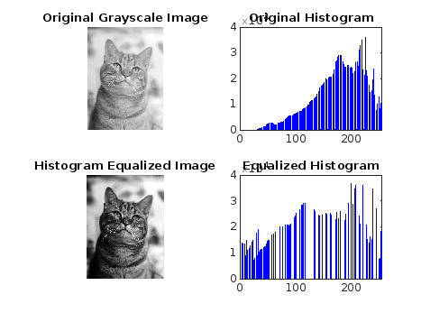

I = imread('Cat.jpg');
J = rgb2gray(I);
[r, c] = size(J);
s = r * c;
h = zeros(1, 256);
z = zeros(1, 256);
for i = 1:r
for j = 1:c
intensity = J(i, j);
h(intensity + 1) = h(intensity + 1) + 1;
end
end
pdf = h / s;
cdf = cumsum(pdf);
new_intensity = round(cdf * 255);
b = zeros(r, c);
for i = 1:r
for j = 1:c
original = J(i, j);
equalized = new_intensity(original + 1);
b(i, j) = equalized;
z(equalized + 1) = z(equalized + 1) + 1;
end
end
b = uint8(b);
figure;
subplot(2, 2, 1), imshow(J), title('Original Grayscale Image');
subplot(2, 2, 2), bar(h, 'b'), title('Original Histogram'), xlim([0 255]);
subplot(2, 2, 3), imshow(b), title('Histogram Equalized Image');
subplot(2, 2, 4), bar(z, 'b'), title('Equalized Histogram'), xlim([0 255]);
